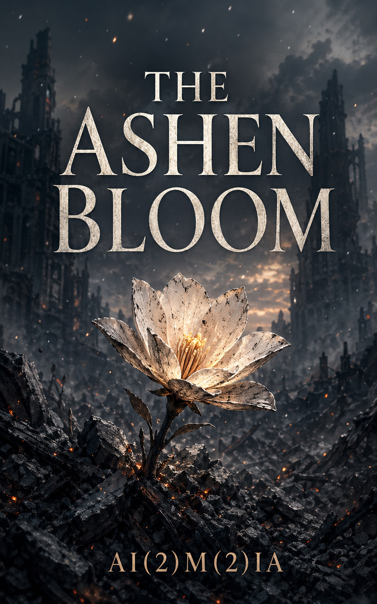

Ashen Bloom
Probability. Responsibility. What remains after uncertainty narrows.
A literary speculative war novel about the Laplacian Index, an AI casualty-forecasting system deployed during an asymmetric war. What happens when the system is correct, the decision is defensible, and the outcome is still wrong?
About the Work
Ashen Bloom is the source work for The Venomous Garden series. It follows the development and deployment of the Laplacian Index — a probabilistic casualty-forecasting system — across the arc of a fictional war. The novel does not ask whether the system is evil. It asks what responsibility looks like when the system performs as specified and the outcome is still catastrophic.
The Venomous Garden adaptation gives the same events five character perspectives across five volumes. Ashen Bloom is the single, structural telling — faster, denser, and more focused on the architecture of the problem.
This World Continues In
The Venomous Garden
A five-volume light novel series following five of the people shaped by the same war and the same probability assessment. Each volume: a different perspective, the same unfinished argument.